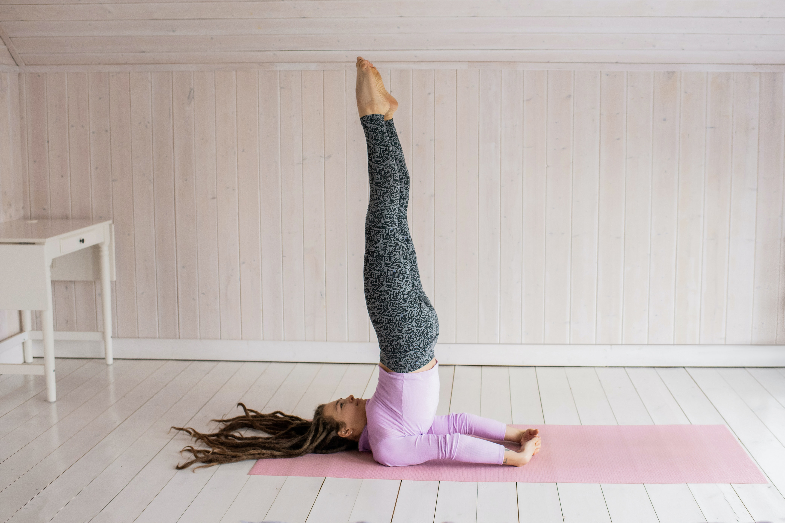

Yogshakti Centre
Where Tranquility Begins



Beginners
This course is for beginners who are starting there journey on the path of yoga. This will be consist of regular one hour class of basic aasanas and brief introduction to yoga.
| Batches | Inatke | Days | Time |
|---|---|---|---|
| Batch-1 | 20 | Mon-Fri | 6am - 7am |
| Batch-2 | 20 | Mon-Fri | 7am - 8am |
| Batch-3 | 20 | Mon-Fri | 8am - 9am |
Intermediate
This course can be taken by people whi have completed atleast 2 months of beginners course or have background of yoga. It will be consist of alternate day classes of one and half hour and will be comprised of intermediate level aasanas, Pranayama, Dhyan(Meditation) and cleansing processes.
| Batches | Inatke | Days | Time |
|---|---|---|---|
| Batch-1 | 10 | Mon, Wed, Fri | 5pm - 6.30pm |
| Batch-2 | 10 | Tue,Thur,Sat | 5pm - 6.30pm |
Advance
This is the advanced level course for people who are experienced in the field and wish to enhance the knowledge and experience. It will consist of Advanced level of Aasanas and mediations. People looking for speritual enhancment are welcome.
| Batches | Inatke | Days | Time |
|---|---|---|---|
| Batch-1 | 10 | Mon, Wed, Fri | 5pm - 6.30pm |
| Batch-2 | 10 | Tue,Thur,Sat | 5pm - 6.30pm |